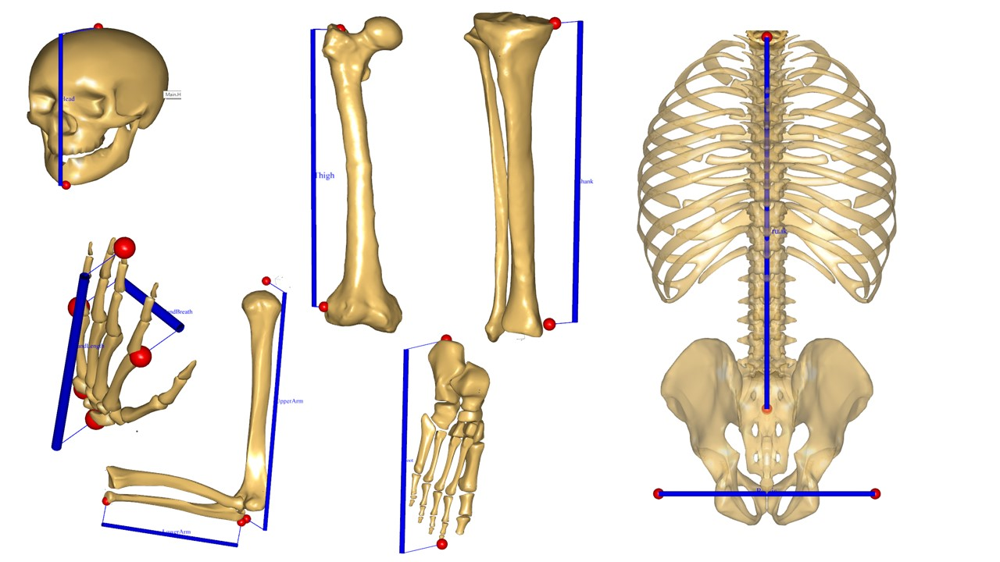

Lesson 2: Scaling based on External Body Measurements#
This tutorial presumes that you have completed Scaling tutorial Lesson 1: Joint to joint scaling methods. It covered the methods ScalingStandard, ScalingUniform, ScalingLengthMass and ScalingLengthMassFat.
This lesson introduces more scaling methods, more precisely:
ScalingUniformExt (scale equally in all directions; input is external measurements)
ScalingLengthMassExt (scale taking mass into account; input is external measurements)
ScalingLengthMassFatExt (scale taking mass and fat into account; input is external measurements).
Scaling External#
The scaling laws we discussed in Lesson 1 are using measures for the segment lengths based on joint-to-joint distances, but some joint locations cannot be easily palpated. The hip joints are a good example. They are located deep under the skin and are not easy to measure from the outside. So to facilitate scaling to individuals, another set of scaling methods are provided that use only distances between external bony landmarks. The same three scaling strategies (uniform, length mass and length mass fat) are available based on bony landmarks. They are selected like this:
// Scaling laws using joint to joint measures
// #define BM_SCALING _SCALING_UNIFORM_
// #define BM_SCALING _SCALING_LENGTHMASS_
// #define BM_SCALING _SCALING_LENGTHMASSFAT_
// Scaling laws using external measures
// #define BM_SCALING_SCALING_UNIFORM_EXTMEASUREMENTS
// #define BM_SCALING_SCALING_LENGTHMASS_EXTMEASUREMENTS
#define BM_SCALING_SCALING_LENGTHMASSFAT_EXTMEASUREMENTS
// Anthropometric data file (unchanged files can be found in AAUHuman\Scaling\AnyFamily)
// #path BM_SCALING_ANTHRO_FILE "Model\AnyFamily\AnyMan.any"
// #path BM_SCALING_ANTHRO_FILE "Model\AnyFamily\AnyManUniform.any"
#path BM_SCALING_ANTHRO_FILE "Model\AnyFamily\AnyManExternal.any"
// #path BM_SCALING_ANTHRO_FILE "Model\AnyFamily\AnyManExtPercentile.any"
// #path BM_SCALING_ANTHRO_FILE "Model\AnyFamily\AnyWomanExtPercentile.any"
ScalingUniformExt, ScalingLengthMassExt and ScalingLengthMassFatExt are the scaling laws that use external measurements. They have exactly the same scaling properties as their corresponding joint-to-joint counterparts, and are controlled by the file AnyManExternal.any. This last file works exactly like the AnyMan.any file, taking as input the body mass, body height and individual segments lengths.
The external measures have to be taken at specific locations and in a specific posture as shown in the figure below. The application you have downloaded already places the body in an appropriate posture. There is also an include file that displays the location of the different measures called DrawExternalMeasures.any. If included as shown below, it will display the exact dimensions on the model:
AnyFolder Model = {
// A link to the human model
AnyFolder &HumanModel=.HumanModel.BodyModelWithDefaultDrivers;
// Environment files are used to include objects surrounding human, e.g. global reference frame
#include "Model\Environment.any"
// All added constraints reaction forces to simulate standing human
#include "Model\Drivers.any"
#define DRAW_EXTERNAL_MEASURES
// Visualization of the external measures
#ifdef DRAW_EXTERNAL_MEASURES
#include "Model\DrawExternalMeasures.any"
#endif
};
We should also remove the drawing of the forces on the hands to make the view plainer. You can do this by commenting out the code in the Environment.any file:

// AnyDrawVector DrawRightLoad = {
// Vec = .RightHandLoad.F*0.015;
// PointAway = On;
// GlobalCoord = On;
// Line = {
// Style = Line3DStyleFull;
// Thickness = 0.01;
// RGB = {0, 0, 0};
// End = {
// Style = Line3DCapStyleArrow;
// RGB = {0, 0, 0};
// Thickness = 0.025;
// Length = 0.025;
// };
// };
// AnyRefFrame &Hand = .RightHandLoad.Hand;
// };
//
// AnyDrawVector DrawLeftLoad = {
// Vec = .LeftHandLoad.F*0.015;
// PointAway = On;
// GlobalCoord = On;
// Line = {
// Style = Line3DStyleFull;
// Thickness = 0.01;
// RGB = {0, 0, 0};
// End = {
// Style = Line3DCapStyleArrow;
// RGB = {0, 0, 0};
// Thickness = 0.025;
// Length = 0.025;
// };
// };
// AnyRefFrame &Hand = .LeftHandLoad.Hand;
// };
And secondly switch off muscles in the Main file by uncommenting these lines:
#ifndef BM_LEG_MUSCLES_BOTH
#define BM_LEG_MUSCLES_BOTH OFF
#endif
#ifndef BM_ARM_MUSCLES_BOTH
#define BM_ARM_MUSCLES_BOTH OFF
#endif
#ifndef BM_TRUNK_MUSCLES
#define BM_TRUNK_MUSCLES OFF
#endif
After loading the model you will see that the red spheres on the image below show the bony landmarks used for scaling of segment lengths in these methods and the blue lines connecting them show the actual dimensions.
Percentile scaling#
While the methods described in the previous section are useful for scaling a model to a particular individual, many applications, especially within ergonomic product design, require the model to fit an archetypical body size such as they are defined in anthropometrical population statistics. So this section describes scaling of models to a certain percentile of the population. The anthropometric data of the population are presumed to follow a Gaussian distribution and with enough measured data it is possible to calculate the average or mean value, standard deviation and percentile values. The mean value also corresponds to the 50th percentile, meaning that 50% of the population is larger and 50% is smaller than that exact value. Anthropometric data can be found in many sources, but the files used in this section are based on this reference: ADULTDATA, The Handbook of Adult Anthropometric Measurements. Data for Design Safety. Dept. of Trade & Industry, United Kingdom.
This scaling strategy for percentiles also uses external measures, so you have to include one of the three external scaling laws. We shall use ScalingLengthMassFatExt, but as you may have guessed we need a specific AnyMan file to control the percentile scaling. This one is called AnyManExtPercentile.any. It has been designed to represent the European male population, but if you have data available for other populations it is easy to fill them in. This is how it is done (you can also comment out the DrawExternalMeasure if you do not want it):
// Anthropometric data file (unchanged files can be found in AAUHuman\Scaling\AnyFamily)
// #path BM_SCALING_ANTHRO_FILE "Model\AnyFamily\AnyMan.any"
// #path BM_SCALING_ANTHRO_FILE "Model\AnyFamily\AnyManUniform.any"
// #path BM_SCALING_ANTHRO_FILE "Model\AnyFamily\AnyManExternal.any"
#path BM_SCALING_ANTHRO_FILE "Model\AnyFamily\AnyManExtPercentile.any"
// #path BM_SCALING_ANTHRO_FILE "Model\AnyFamily\AnyWomanExtPercentile.any"
Open the AnyManExtPercentile file. The percentile function controls all the anthropometric data we saw previously: the body mass, body height and all segment lengths. All you have to do is to specify the Percentile variable, and due to the non linearity of the function, you also have to select the linear regression corresponding to the range of value of the percentile.
Let us try some examples now. In the AnyManExtPercentile file enter an 80th percentile as input:
// PercentileAnyVar
Percentile = 80; //Percent of the population represented. Choose one of the Z linear regressions below.
You have to take care that the linear regression for Z is valid for an 80th percentile:
// Choose only one of the following linear regressions depending on the percentile.
//AnyVar Z = (0.064*Percentile)-1.96; // This is an approximation valid for Percentile from 5% to 15%.
AnyVar Z = (0.0279*Percentile)-1.3971; // This is an approximation valid for Percentile from 16% to 84%.
//AnyVar Z = (0.064*Percentile)-4.44; // This is an approximation valid for Percentile from 85% to 95%.
The regression model included now is valid for Percentile from 16% to 84%. We go for 80%, so the regression is valid. You can load the model and investigate the proportions in the model view window. 80% of the European males are smaller than the model you have now, and 20% are taller. Let us try to model a 95th percentile male. This time we also have to change the linear regression function:
// Percentile
AnyVar Percentile = 95; //Percent of the population represented. Choose one of the Z linear regression below.
// Choose only one of the following linear regression depending on the percentile.
//AnyVar Z = (0.064*Percentile)-1.96; // This is valid for Percentile from 5% to 15%.§
//AnyVar Z = (0.0279*Percentile)-1.3971; // This is valid for Percentile from 16% to 84%.
AnyVar Z = (0.064*Percentile)-4.44; // This is valid for Percentile from 85% to 95%.§</
An example of application for such scaling can be a door height: we know that if the door is high enough for this model then it will be enough for 95% of the population.
As the file AnyManExtPercentile represent European males, there is a file AnyWomanExtPercentile representing European females. The percentile is specified in exactly the same way.
We are extremely grateful to Ford Forschungszentrum Aachen, Germany, for sponsoring the scaling implementation.
See also
Next lesson: Lesson 3: Scaling using segmental scaling vectors.